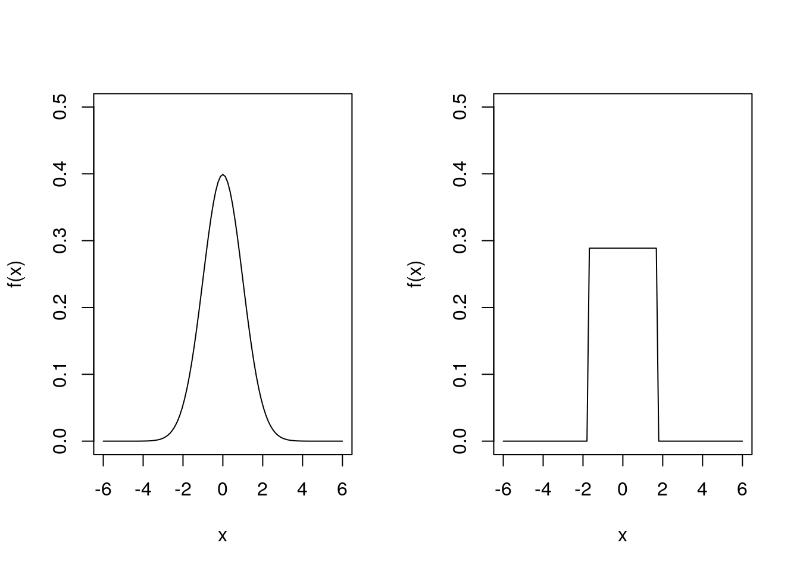
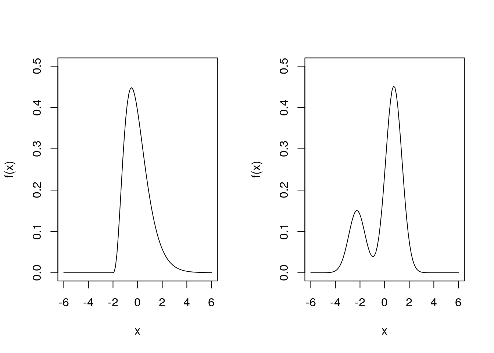

Chapter 2 Moments
2.1 Expected value
Suppose we have a discrete random variable \(Y\) with probability function \(p(.)\) with domain \(D\). Although \(p(.)\) tells us everything about the properties of \(Y\), it is often useful to summarise the properties \(Y\) using a few simple quantities.
A simple summary of the probabilistic properties of \(Y\) is the expected value or (population) mean of \(Y\), denoted by \(E(Y)\) or \(\mu\), depending on the context.
We can find the expected value of new random variable \(h(Y)\) with \[E[h(Y)] = \int_{-\infty}^{\infty} h(y) f(y) dy = \int_D h(y) f(y) dy\] if \(Y\) is a continuous random variable with pdf \(f(.)\). We may obtain a similar expression in the discrete case.
2.2 Variance
It is easy to show that \[ \text{Var}(Y) = E(Y^2) - [E(Y)]^2.\] \(\text{Var}(Y)\) is a measure of spread, and is often denoted by \(\sigma^2\).
We sometimes use the (population) standard deviation, which is just the square root of the variance, to return to the original scale of measurement of \(Y\).
2.3 Higher-order moments
So far we have summarised random variables using the mean and variance (or standard deviation), which measure the “location” and the “spread”. Why would we need anything more? Consider the following two density functions of two different continuous distributions:

In fact, the plot on the left is the pdf of a \(N(0, 1)\) distribution, and the plot on the right is the pdf of a \(\text{Uniform}(-\sqrt{3}, \sqrt{3})\) distribution. Both have mean \(0\) and variance \(1\), yet they look very different. They are both symmetric about \(0\) (the mean) but differ in terms of “shape”.
Consider two more density functions:

Again both have mean \(0\) and variance \(1\), yet they look very different. Neither is symmetric and they have different “shapes”.
How can we capture something useful about “shape”? We use so-called higher-order moments — particularly the third and fourth moments. So we need a general definition of moments and it will be useful to obtain relationships between them.
In what follows, we will assume our random variable \(Y\) has continuous distribution. The discrete case follows by replacing the pdf by the probability function and the integral by a sum.
How about the third and fourth moments about the mean? We have \[\mu_3 = E\left\{[Y - E(Y)]^3\right\} = \int_{-\infty}^\infty (y - \mu)^3 f(y) dy.\]
If \(Y\) has symmetric distribution then \(\mu_3 = 0\). If \(Y\) has a heavier right tail than left tail then \(\mu_3 > 0\), and conversely if \(Y\) has a heavier left tail than right, then \(\mu_3 < 0\).
Similarly, the fourth moment about the mean is \[\mu_4 = E\left\{[Y - E(Y)]^4\right\} = \int_{-\infty}^\infty (y - \mu)^4 f(y) dy.\]The proof is very similar to that of 2.1, and we leave it as an exercise.
For symmetric distributions, roughly speaking thick tails lead to higher values of \(\mu_4\) than light tails.
2.4 Standardised moments
Remember that the basic idea is to describe location and spread via the mean and variance and the describe “shape” in terms of the third and fourth moments. So we don’t mix up spread with shape we usually use standardised third and fourth moments about the mean.
The skewness and kurtosis are unchanged by linear transformations of \(Y\).
Of course we could consider yet higher order moments to fine tune our understanding of \(Y\). However, we often stop at \(r = 4\). Even so, if we just want to obtain the first four moments of a distribution, this may involve a lot of (difficult!) integration. In Chapter 3 we will find a method that allows us to find as many moments as we like but with only one integration required.
We will see in Example 3.4 that any \(N(\mu, \sigma^2)\) distribution has skewness \(\gamma_1 = 0\) and kurtosis \(\gamma_2 = 3\). The kurtosis of other distributions is often compared with that of a normal distribution: if \(\gamma_2 < 3\), a distribution has lighter tails than the normal distribution, while if \(\gamma_2 > 3\), a distribution has heavier tails than the normal distribution.
Example 2.5 (Higher order Bernoulli moments) Let \(Y \sim \text{Bernoulli}(\theta)\). It is easy to see that \(\mu_r^\prime = \theta\), for \(r = 1, 2, 3, \ldots\).
So, using Theorem 2.1, the third moment about the mean is \[\begin{align*} \mu_3 &= \mu_3^\prime - 3 \mu_2^\prime \mu + 2 \mu^3 \\ &= \theta - 3 \theta . \theta + 2 \theta^3 \\ &= \theta - 3 \theta^2 + 2\theta^3 \\ &= \theta (1 - \theta) (1 - 2 \theta). \end{align*}\]So the skewness is \[\gamma_1 = \frac{\mu_3}{\mu_2^{3/2}} = \frac{\theta (1 - \theta)(1 - 2 \theta)}{[\theta (1 - \theta)]^{3/2}} = \frac{1 - 2 \theta}{\sqrt{\theta(1 - \theta)}}.\] Note that the skewness is positive if \(\theta < 0.5\), zero if \(\theta = 0.5\), and negative if \(\theta > 0.5\).
Using Theorem 2.2, the fourth moment about the mean is \[\begin{align*} \mu_4 &= \mu_4^\prime - 4 \mu_3^\prime \mu + 6 \mu_2^\prime \mu^2 - 3 \mu^4 \\ &= \theta - 4 \theta. \theta + 6 \theta. \theta^2 - 3 \theta^4 \\ &= \theta(1 - 4 \theta + 6 \theta^2 - 3 \theta^3) \\ &= \theta (1 - \theta) (1 - 3 \theta + 3 \theta^2). \end{align*}\] So the kurtosis is \[\gamma_2 = \frac{\mu_4}{\mu_2^2} = \frac{1 - 3 \theta + 3 \theta^2}{\theta (1 - \theta)}.\] Note that \(\gamma_2 = 1\) for \(\theta = 0.5\).Example 2.6 (Higher order exponential moments) Let \(Y \sim \text{exponential}(\theta)\), with pdf \(f (y) = \theta \exp(- \theta y)\) for \(y > 0\). We have seen that \(E(Y) = \theta^{-1}\) (Example 2.2) and \(E(Y^2) = 2 \theta^{-2}\) (Example 2.4).
The third moment is \[\begin{align*} \mu_3^\prime = E(Y^3) &= \int_{0}^\infty y^3 \theta e^{-\theta y} dy \\ &= \frac{1}{\theta^2} \int_0^\infty t^3 e^{-t} dt \\ &= \frac{1}{\theta^3} \left\{\left[-t^3 e^{-t}\right]_0^\infty + 3 \int_0^\infty t^2 e^{-t} dt \right\} \\ &= \frac{1}{\theta^3} \left\{0 + 3 \times 2 \right\} = \frac{6}{\theta^3}, \end{align*}\]where we have used the fact that \(\int_0^\infty t^2 e^{-t} dt = 2\), from Example 2.4. So, using Theorem 2.1, the third moment about the mean is \[ \mu_3 = \mu_3^\prime - 3\mu_2^\prime \mu + 2 \mu^3 = \frac{6}{\theta^3} - \frac{6}{\theta^2} \cdot \frac{1}{\theta} + \frac{2}{\theta^3} = \frac{2}{\theta^3}.\] So the skewness is \[\gamma_1 = \frac{(2/ \theta^3)}{(1/ \theta^2)^{3/2}} = 2,\] so the exponential distribution has the same positive skewness for all values of the rate parameter \(\theta\).
The fourth moment is \[\begin{align*} \mu_4^\prime = E(Y^4) &= \int_0^\infty y^4 \theta e^{-\theta y} dy \\ &= \frac{1}{\theta^4} \int_0^\infty t^4 e^{-t} dt \\ &= \frac{1}{\theta^4} \left\{[-t^4 e^{-t}]_0^\infty + 4 \int_0^\infty t^3 e^{-t} dt \right\} \\ &= \frac{1}{\theta^4} \left\{0 + 4 \times 6 \right\} = \frac{24}{\theta^4}, \end{align*}\] where we have used that \(\int_0^\infty t^3 e^{-t}dt = 6\), from above. So, using Theorem 2.2, the fourth moment about the mean is \[\begin{align*} \mu_4 &= \mu_4^\prime - 4 \mu_3^\prime \mu + 6 \mu_2^\prime \mu^2 - 3 \mu^4\\ &= \frac{24}{\theta^4} - 4 \cdot \frac{6}{\theta^3} \cdot \frac{1}{\theta} + 6 \cdot \frac{2}{\theta^2} \cdot \frac{1}{\theta^2} - \frac{3}{\theta^4} \\ &= \frac{9}{\theta^4}. \end{align*}\] So the kurtosis is \[\gamma_2 = \frac{9/\theta^4}{(1/\theta^2)^2} = 9,\] which does not depend on \(\theta\). All exponential random variables are positively skewed (\(\gamma_1 = 2\)), with a high kurtosis (\(\gamma_2 = 4\)), meaning the exponential distribution has heavier tails than the normal distribution.